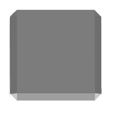
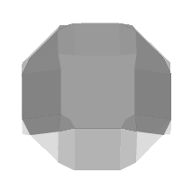
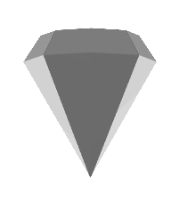
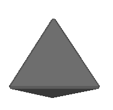

On the Subject of Gemory
"It’s the 3 of Green Rubies!" *Bomb Explodes*
On the module, there is a black square and a timer counting down for 60 seconds. On the black square a set of gems will be displayed. A set will have 1 to 4 gems of a random color and shape from the table below. Every time the timer reaches 0, the set will change. The module backing will be 1 of 4 colors, listed in the table below.
Keep track of a list of directions. This list starts empty. For every set that appears on the module, follow the below instructions.
- If the set's color matches its shape, press the status light. The direction list will reset, and the module backing may change colors.
- Otherwise, if either the set's color or shape matches the module's backing†, add the direction corresponding to the other one (color or shape) to the direction list, then input each direction in the list in order.
- Otherwise, input nothing.
| Shape |  |  |  |  |
|---|---|---|---|---|
| Color‡ | Red | Green | Blue | Purple |
| Direction | Up | Right | Down | Left |
The number of gems in the the previous set affects the displayed set.
| Number | 1 | 2 | 3 | 4 |
|---|---|---|---|---|
| Effect | Next set will not add to the list or require input. | Next set will have its color mirrored.* | Next set will have its shape mirrored.* | Next set is normal. |
If an input is incorrect, an input is made when all necessary inputs have been received or the timer reaches 0 and a necessary input was not received then the module will strike and everything will reset.
This module will be solvable after all non-boss modules are solved. Select the module to solve it.
† Check the set's color first.
‡ The colors in this table are accurate to the module background, but not to the gems themselves.
* Mirror means to flip along the middle of the table (Red⇔Purple).